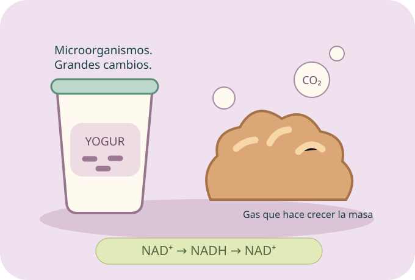

Primero, glucólisis.
En el citosol, una glucosa se transforma en dos piruvatos. Se forman cuatro ATP, pero se invierten dos: la ganancia es 2 ATP netos. NAD⁺ recibe electrones y se convierte en NADH.
04 · Fermentación
Del pan que crece al músculo que trabaja: un mismo reto celular, recuperar NAD⁺ para seguir con la glucólisis.
Descubre dos rutas, observa sus productos y encuentra de dónde viene realmente el ATP.
Comenzar el recorrido ↓
La idea central / Mantener la ruta en marcha
La fermentación es un proceso metabólico que regenera NAD⁺ a partir de NADH sin utilizar una cadena respiratoria en ese mecanismo.
En el citosol, una glucosa se transforma en dos piruvatos. Se forman cuatro ATP, pero se invierten dos: la ganancia es 2 ATP netos. NAD⁺ recibe electrones y se convierte en NADH.
Para que la glucólisis continúe necesita NAD⁺ disponible. La fermentación transfiere electrones de NADH a una molécula orgánica y regenera NAD⁺.
El NAD⁺ puede usarse de nuevo. En las rutas láctica y alcohólica típicas estudiadas, las reacciones fermentativas no añaden ATP directamente: el ATP proviene de la glucólisis.
Una idea que evita confusiones: la glucólisis produce ATP; la fermentación permite sostenerla al reciclar NAD⁺. NAD⁺/NADH transportan electrones: no son ATP ni ADP.
No requiere O₂ directamente, pero eso no significa que su presencia impida siempre fermentar. Puede ocurrir cuando no se utiliza respiración o cuando esta no procesa los productos de la glucólisis al mismo ritmo. Depende de la célula y las condiciones.
Las rutas fermentativas estudiadas ocurren en el citosol, parte líquida del citoplasma. Pueden realizarlas células sin mitocondrias, y también células con mitocondrias, como levaduras y células musculares.
Dos destinos / Una función compartida
Las dos rutas regeneran NAD⁺. Observa qué pasa con el piruvato y con sus carbonos.
Fermentación láctica
El piruvato recibe electrones de NADH y se transforma en lactato. NADH vuelve a ser NAD⁺.
La ruta homoláctica típica no libera CO₂ en esa conversión: cada lactato conserva tres carbonos. La realizan algunas bacterias y células animales.
Ejemplos: cultivos de yogur y células musculares durante esfuerzos intensos. Algunas bacterias tienen otras rutas lácticas que también producen gas.
Fermentación alcohólica
El piruvato pierde CO₂ y forma acetaldehído. Este recibe electrones de NADH y se transforma en etanol, mientras se regenera NAD⁺.
La realizan levaduras como Saccharomyces cerevisiae, un hongo unicelular. Se aprovecha en panificación, bebidas fermentadas y procesos industriales.
Dos etanoles de dos carbonos más dos CO₂ de un carbono conservan los seis carbonos de la glucosa inicial.
Los esquemas anteriores resumen el destino del carbono; omiten NADH/NAD⁺ y otros participantes. No son ecuaciones químicas completas.
En tu cuerpo / Aclara el mito
Durante un esfuerzo intenso, producir lactato ayuda a regenerar NAD⁺ para sostener una glucólisis rápida. Puede ocurrir incluso con oxígeno disponible. El lactato puede transportarse y reutilizarse como combustible o participar en la formación de glucosa.
No es la causa directa del dolor muscular que aparece días después del ejercicio. Ese dolor tardío se relaciona con respuestas del tejido al esfuerzo, no con lactato que permanece atrapado durante días.
Son formas ácido-base relacionadas. Cuando el ácido láctico pierde un H⁺, queda lactato. Al pH habitual de nuestras células, predomina el lactato. Por eso usamos ese nombre para el producto muscular, aunque el proceso se llame fermentación láctica.
Práctica 01 / Simulador celular
Realiza glucólisis y luego fermentación en cada ruta. Prueba repetir un paso fuera de orden: el modelo te explicará qué falta.
Cambiar de ruta inicia una muestra nueva; conserva las rutas que ya comprobaste.
Modelo didáctico con tres glucosas y dos transportadores reutilizables. No representa la cantidad real de NAD⁺ de una célula, tiempos ni velocidades. Supone disponibles ADP, fosfato y los demás componentes. Los contadores de productos y ATP son acumulados; «2 ATP» ya descuenta la inversión inicial.
De la célula a la mesa / Y más allá
La fermentación transforma sustancias: eso puede cambiar el sabor, la textura, el volumen o la conservación de ciertos alimentos.
La levadura transforma azúcares y forma etanol y CO₂. El gas queda atrapado en la masa y ayuda a que crezca. Al hornear se modifica la masa y se elimina gran parte del etanol.
Lactobacillus delbrueckii subsp. bulgaricus y Streptococcus thermophilus son bacterias usadas en yogur. Su actividad acidifica la leche y favorece cambios en sus proteínas y textura.
En muchos quesos intervienen cultivos lácticos, como Lactococcus lactis. La maduración puede incluir otros microorganismos y procesos. No todos los quesos se explican por una sola ruta.
Las fermentaciones se utilizan en bebidas fermentadas y en procesos controlados para obtener productos como bioetanol y ácido láctico. También ayudan a ciertos microorganismos a sostener su metabolismo en ambientes donde no usan respiración.
En algunos alimentos, los ácidos producidos dificultan el crecimiento de ciertos microorganismos y contribuyen a la conservación. El resultado depende del proceso y de sus condiciones; «fermentado» no significa automáticamente estéril.
Práctica 02 / Quién actúa y qué produce
Relaciona las dos pistas. Incluimos también músculo e industria para mirar más allá de los alimentos.
Compara / El mecanismo importa
Distingue fermentación, respiración aerobia y respiración anaerobia por lo que hacen, no solo por sus nombres.
| Característica | Glucólisis + fermentación típica | Respiración aerobia | Respiración anaerobia |
|---|---|---|---|
| Cadena respiratoria | No se usa en el mecanismo fermentativo. | Sí. | Sí. |
| Aceptor de electrones | Una molécula orgánica: piruvato o acetaldehído en estas rutas. | O₂ al final de la cadena. | Otro aceptor al final de la cadena, como nitrato o sulfato. |
| Ubicación | Citosol. | Citosol y mitocondria en eucariotas; citoplasma y membrana plasmática en procariotas. | En ejemplos procariotas, citoplasma y membrana plasmática. |
| ATP por glucosa | 2 netos, obtenidos en glucólisis. | ≈ 30–32 en muchas células eucariotas; variable. | Variable según el organismo y el aceptor. |
| Productos del balance | Lactato, o etanol y CO₂, según la ruta. | CO₂ y agua al oxidar completamente glucosa. | Dependen del nutriente y del aceptor empleado. |
Sostiene la glucólisis sin usar una cadena respiratoria. Su limitación es el bajo rendimiento por glucosa; los productos orgánicos conservan energía química.
La respiración aerobia aprovecha mucha más energía por glucosa, pero requiere O₂ como aceptor final y los sistemas celulares adecuados. Ninguna vía crea energía de la nada.
Las dos fermentaciones: láctica típica → lactato, sin CO₂ en la conversión; alcohólica típica → etanol y CO₂. Ambas regeneran NAD⁺ y sostienen la glucólisis. Recordar tipos de respiración ↗
Práctica 03 / Cuenta sin confundir
Predice primero el ATP neto. Después compara con una estimación de respiración aerobia eucariota.
Prueba las cinco cantidades. Puedes usar las flechas del teclado.
Glucólisis + fermentación
Respiración aerobia eucariota
Las barras comparan 2 frente a 32 por glucosa. La respiración se expresa como intervalo aproximado, no como una medición. El modelo supone aprovechamiento completo de las glucosas por la vía elegida.
Práctica 04 / Examina las pistas
Doce situaciones. A veces la respuesta correcta es reconocer que falta información.
Tu repaso / Conecta lo aprendido
Banco de 48 preguntas.
Responde, entiende y vuelve a intentar.
Una respuesta por pregunta. Después podrás revisar tus errores.
Lee el porqué antes de avanzar.
Ronda completada
Tu avance se mantiene durante esta visita. Al recargar o cerrar, comienza de nuevo.
Cierre de Biología parte 4 / Conecta lo aprendido
Los nutrientes llegan a la célula mediante mecanismos de transporte. El metabolismo los transforma; la glucólisis puede iniciar su aprovechamiento. La respiración y la fermentación ofrecen mecanismos diferentes para sostener el metabolismo y la obtención de ATP.
Tu idea final: el ATP de las rutas fermentativas estudiadas se obtiene en la glucólisis. La fermentación regenera NAD⁺ para que la ruta pueda continuar.
Consulta: OpenStax Microbiology: fermentación y Biology 2e: metabolismo sin oxígeno; estudio sobre cultivos de yogur. Texto, ilustraciones, ejercicios y preguntas originales para este temario.